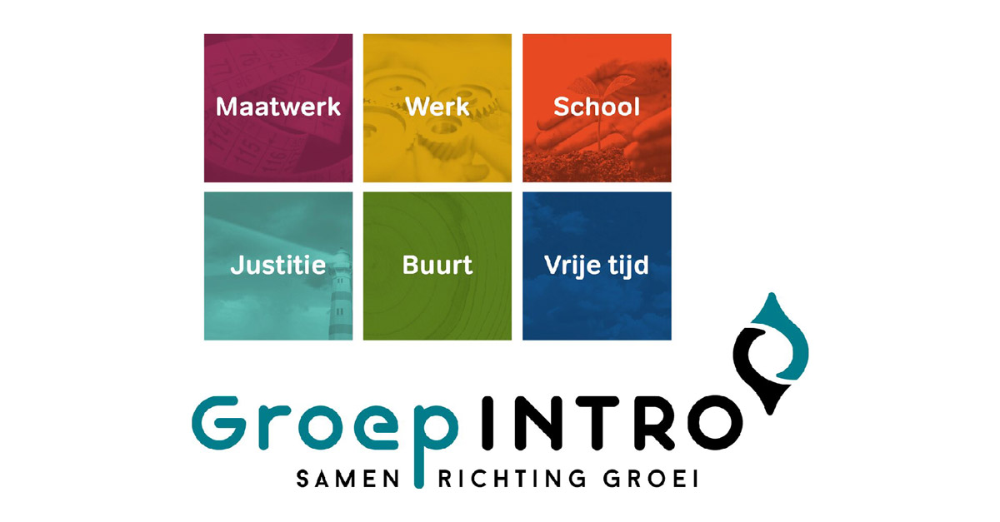

Project 1
Dit is een project dat we moesten maken voor het vak websites. Hierin leerde we een leuke basic website maken.

Project 2
Dit is een project dat we moesten maken in wordpress. We hadden de opdracht gekregen om de website van Groep Intro op te frissen. Het project lijkt me redelijk succesvol uitgedraaid te zijn!

Project 3
Dit is een uitbreiding op het eerste project dat we moesten maken voor het vak websites. Hierin leerde we een leuke website te maken die ook interactive moest zijn. Dit deden we met behulp van bootstrap en css.